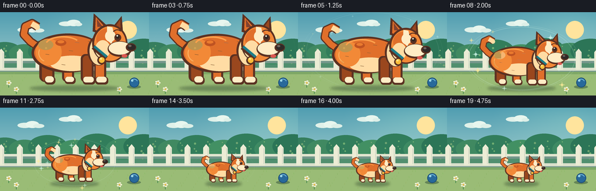
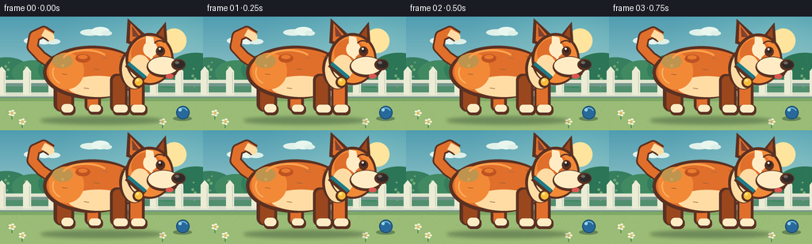
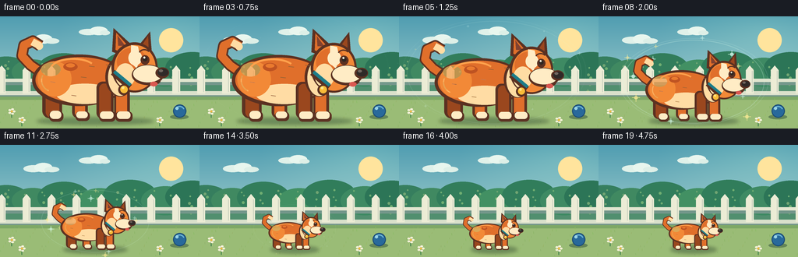
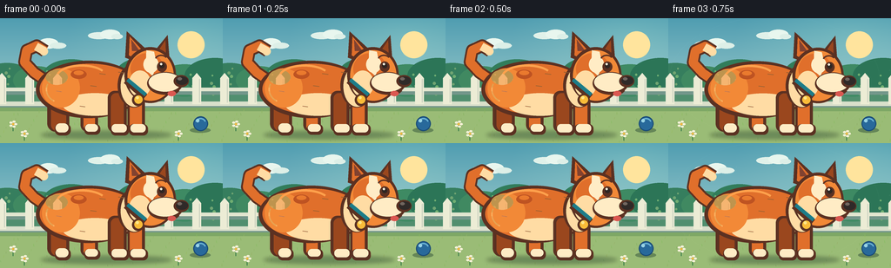

CODING AGENTS AS PIXEL WORLD MODELS
traex/GPT-5.6-Sol · instance_preservation_0048
点击播放 · 原生 RGB 像素
逐轮保存的候选
回放视频、检查图与代码变化。
每份候选均可单独播放。实际图片检查记录在下方工具轨迹中。
候选 01播放与检查图
点击播放 · 原生 RGB 像素


展开代码变化
--- 上一保存版本
+++ 本次保存版本
@@ -0,0 +1,272 @@
+from pathlib import Path
+import json, math
+import numpy as np
+from PIL import Image, ImageDraw, ImageFilter
+import artifact_io
+
+CASE_DIR = Path(__file__).resolve().parent
+SPEC = json.loads((CASE_DIR / "task_spec.json").read_text())
+W, H = SPEC["width"], SPEC["height"]
+N, FPS = SPEC["frames"], SPEC["fps"]
+SS = 4
+
+
+def sc(v):
+ return int(round(v * SS))
+
+
+def box(t):
+ return tuple(sc(v) for v in t)
+
+
+def build_background():
+ """A calm, fixed garden gives an unambiguous scale reference."""
+ h, w = H * SS, W * SS
+ yy = np.linspace(0, 1, h, dtype=np.float32)[:, None, None]
+ top = np.array([80, 157, 177], dtype=np.float32)[None, None, :]
+ bottom = np.array([194, 226, 216], dtype=np.float32)[None, None, :]
+ arr = np.tile(top * (1 - yy) + bottom * yy, (1, w, 1))
+ # Soft sunlight from upper right.
+ xx = np.linspace(0, 1, w, dtype=np.float32)[None, :, None]
+ glow = np.clip(1 - np.sqrt(((xx - .82) / .52) ** 2 + ((yy - .14) / .50) ** 2), 0, 1)
+ arr = np.clip(arr + glow * np.array([21, 17, 8])[None, None, :], 0, 255).astype(np.uint8)
+ im = Image.fromarray(arr, "RGB")
+ d = ImageDraw.Draw(im)
+
+ # Sun, clouds, and far-off foliage.
+ d.ellipse(box((204, 15, 235, 46)), fill=(255, 228, 157))
+ for cloud in [(30, 23, 76, 35), (101, 13, 141, 24)]:
+ x0,y0,x1,y1 = cloud
+ d.ellipse(box((x0, y0+3, x0+25, y1)), fill=(224, 241, 233))
+ d.ellipse(box((x0+14, y0, x0+37, y1)), fill=(232, 246, 238))
+ d.ellipse(box((x0+27, y0+5, x1, y1)), fill=(221, 239, 231))
+ # Layered shrubs.
+ d.rectangle(box((0, 68, 256, 105)), fill=(81, 143, 111))
+ for x, y, r, col in [
+ (8,68,30,(54,126,94)), (42,70,27,(64,137,97)), (82,66,34,(50,125,91)),
+ (128,71,28,(66,144,99)), (167,64,35,(49,125,91)), (212,70,31,(62,138,99)),
+ (247,65,35,(44,117,87))]:
+ d.ellipse(box((x-r, y-r*.55, x+r, y+r*.65)), fill=col)
+ # Tiny foliage highlights.
+ for i in range(48):
+ x = (i * 47 + 11) % 259
+ y = 58 + ((i * 29) % 31)
+ r = 1 + (i % 3) * .35
+ d.ellipse(box((x-r, y-r, x+r, y+r)), fill=(112, 164 + (i%2)*10, 114))
+
+ # White garden fence is a stable visual ruler.
+ fence_shadow = (116, 151, 139)
+ d.rectangle(box((0, 83, 256, 88)), fill=fence_shadow)
+ d.rectangle(box((0, 99, 256, 104)), fill=fence_shadow)
+ d.rectangle(box((0, 80, 256, 84)), fill=(225, 229, 207))
+ d.rectangle(box((0, 96, 256, 101)), fill=(218, 224, 203))
+ for x in range(-3, 265, 32):
+ d.polygon([ (sc(x),sc(99)), (sc(x),sc(69)), (sc(x+5),sc(63)),
+ (sc(x+10),sc(69)), (sc(x+10),sc(99))], fill=(236, 236, 213))
+ d.line([(sc(x+8),sc(70)), (sc(x+8),sc(97))], fill=(201,208,190), width=sc(1))
+
+ # Warm lawn foreground.
+ d.rectangle(box((0, 103, 256, 144)), fill=(154, 188, 118))
+ d.rectangle(box((0, 103, 256, 107)), fill=(126, 168, 102))
+ for i in range(90):
+ x = (i * 73 + 19) % 257
+ y = 107 + ((i * 43) % 37)
+ col = (133 + (i%3)*9, 172 + (i%4)*5, 102 - (i%2)*7)
+ d.line([(sc(x),sc(y)), (sc(x + ((i%3)-1)*.6),sc(y-1.7-(i%2)))], fill=col, width=sc(.55))
+
+ # A fixed blue ball at the right makes the shrinkage especially legible.
+ d.ellipse(box((218, 126, 242, 132)), fill=(101, 134, 87))
+ d.ellipse(box((222, 113, 239, 130)), fill=(40, 105, 155), outline=(27, 76, 119), width=sc(1.3))
+ d.arc(box((224, 115, 237, 128)), 205, 335, fill=(109, 180, 212), width=sc(1.4))
+ d.ellipse(box((225, 116, 229, 120)), fill=(153, 211, 229))
+
+ # Foreground daisies, kept to the corners.
+ for x,y in [(15,122),(28,133),(205,133)]:
+ d.line([(sc(x),sc(y+8)),(sc(x),sc(y+1))], fill=(54,122,72), width=sc(1))
+ for a in range(0,360,72):
+ cx=x+math.cos(math.radians(a))*3; cy=y+math.sin(math.radians(a))*3
+ d.ellipse(box((cx-1.8,cy-1.2,cx+1.8,cy+1.2)), fill=(244,241,215))
+ d.ellipse(box((x-1.3,y-1.3,x+1.3,y+1.3)), fill=(242,183,65))
+ return im
+
+
+def make_dog_master():
+ """One detailed master sprite; every frame is a resize of this exact dog."""
+ S = 4
+ sw, sh = 240*S, 150*S
+ im = Image.new("RGBA", (sw, sh), (0,0,0,0))
+ d = ImageDraw.Draw(im)
+ q = lambda p: tuple(int(round(v*S)) for v in p)
+ orange_dark = (154, 71, 30, 255)
+ outline = (91, 49, 34, 255)
+ orange = (224, 111, 43, 255)
+ orange_light = (242, 137, 55, 255)
+ cream = (255, 220, 164, 255)
+ cream_hi = (255, 236, 197, 255)
+
+ # Curled tail behind the body, with a cream tip.
+ tail_pts = [q((54,72)),q((35,59)),q((22,45)),q((25,29)),q((38,23)),q((49,30))]
+ d.line(tail_pts, fill=outline, width=17*S, joint="curve")
+ d.line(tail_pts, fill=orange, width=12*S, joint="curve")
+ d.line([q((37,24)),q((48,30))], fill=cream, width=11*S)
+ d.ellipse(q((42,25,53,36)), fill=cream)
+
+ # Rear legs first.
+ d.rounded_rectangle(q((52,86,81,137)), radius=11*S, fill=outline)
+ d.rounded_rectangle(q((57,88,77,136)), radius=8*S, fill=orange_dark)
+ d.rounded_rectangle(q((62,126,83,142)), radius=7*S, fill=outline)
+ d.rounded_rectangle(q((63,126,80,138)), radius=6*S, fill=cream_hi)
+ d.rounded_rectangle(q((96,89,119,137)), radius=9*S, fill=outline)
+ d.rounded_rectangle(q((100,91,115,136)), radius=7*S, fill=orange)
+ d.rounded_rectangle(q((101,127,122,141)), radius=6*S, fill=outline)
+ d.rounded_rectangle(q((102,127,119,137)), radius=5*S, fill=cream_hi)
+
+ # Main barrel-shaped body.
+ d.ellipse(q((37,43,176,119)), fill=outline)
+ d.ellipse(q((42,47,174,114)), fill=orange)
+ # Lower cream belly and warm rump modelling.
+ d.ellipse(q((72,86,158,116)), fill=cream)
+ d.ellipse(q((45,53,95,105)), fill=orange_light)
+ d.ellipse(q((50,55,79,75)), fill=(249,158,72,180))
+ # Signature small darker fur patch, retained at all sizes.
+ d.ellipse(q((83,55,104,67)), fill=(190,83,34,255))
+ d.ellipse(q((87,56,100,62)), fill=(234,122,46,255))
+ # Back highlight strokes.
+ d.arc(q((63,48,132,82)), 198, 325, fill=(255,161,76,255), width=3*S)
+ d.arc(q((50,63,88,99)), 115, 205, fill=(255,166,77,220), width=2*S)
+
+ # Front legs and cream socks.
+ d.rounded_rectangle(q((132,83,157,138)), radius=9*S, fill=outline)
+ d.rounded_rectangle(q((136,86,153,136)), radius=7*S, fill=orange_dark)
+ d.rounded_rectangle(q((136,127,160,142)), radius=6*S, fill=outline)
+ d.rounded_rectangle(q((137,127,157,138)), radius=5*S, fill=cream_hi)
+ d.rounded_rectangle(q((158,82,181,138)), radius=8*S, fill=outline)
+ d.rounded_rectangle(q((161,85,177,136)), radius=6*S, fill=orange)
+ d.rounded_rectangle(q((160,127,185,142)), radius=6*S, fill=outline)
+ d.rounded_rectangle(q((162,127,182,138)), radius=5*S, fill=cream_hi)
+
+ # Neck ruff behind collar/head.
+ d.ellipse(q((145,47,188,105)), fill=outline)
+ d.ellipse(q((149,50,185,104)), fill=cream)
+ d.polygon([q((149,77)),q((156,91)),q((163,84)),q((169,99)),q((176,85)),q((183,92)),q((185,61))], fill=cream)
+
+ # Ears behind head: dark rims make the dog silhouette readable even when small.
+ d.polygon([q((155,39)),q((157,4)),q((184,29)),q((178,47))], fill=outline)
+ d.polygon([q((160,36)),q((161,11)),q((179,31)),q((174,43))], fill=orange)
+ d.polygon([q((164,30)),q((163,15)),q((174,30))], fill=(129,66,48,255))
+ d.polygon([q((194,30)),q((211,9)),q((214,48)),q((201,55))], fill=outline)
+ d.polygon([q((198,31)),q((208,16)),q((209,45)),q((201,49))], fill=orange_dark)
+
+ # Head and cheek.
+ d.ellipse(q((154,25,222,99)), fill=outline)
+ d.ellipse(q((158,29,219,96)), fill=orange_light)
+ d.ellipse(q((162,33,206,75)), fill=orange)
+ d.ellipse(q((160,56,189,91)), fill=cream)
+ # White blaze is a prominent identity cue.
+ d.polygon([q((183,29)),q((193,31)),q((197,49)),q((191,63)),q((182,55))], fill=cream_hi)
+ d.ellipse(q((179,37,199,59)), fill=cream_hi)
+
+ # Long pale muzzle and black nose.
+ d.ellipse(q((184,58,231,88)), fill=outline)
+ d.ellipse(q((186,59,229,84)), fill=cream_hi)
+ d.ellipse(q((219,62,239,78)), fill=outline)
+ d.ellipse(q((222,64,238,75)), fill=(47,42,40,255))
+ d.ellipse(q((224,65,230,69)), fill=(113,102,95,255))
+
+ # Eye, brow, and a friendly smile.
+ d.ellipse(q((197,44,210,58)), fill=outline)
+ d.ellipse(q((200,46,207,53)), fill=(47,38,34,255))
+ d.ellipse(q((201,46,204,49)), fill=(255,248,222,255))
+ d.arc(q((194,35,211,48)), 198, 330, fill=outline, width=2*S)
+ d.arc(q((204,68,228,88)), 28, 118, fill=outline, width=2*S)
+ d.ellipse(q((211,83,222,90)), fill=(218,88,81,255))
+
+ # Teal collar and round brass tag.
+ d.line([q((156,69)),q((181,91))], fill=outline, width=9*S)
+ d.line([q((158,68)),q((182,88))], fill=(29,124,137,255), width=5*S)
+ d.ellipse(q((164,87,180,103)), fill=outline)
+ d.ellipse(q((167,89,178,100)), fill=(250,188,57,255))
+ d.ellipse(q((169,90,173,94)), fill=(255,231,137,255))
+
+ # Sparse fur ticks add richness without changing the silhouette.
+ for x,y,a in [(109,76,8),(121,60,8),(64,83,7),(146,58,7),(95,103,7)]:
+ d.line([q((x,y)),q((x+a,y+1))], fill=(175,75,31,180), width=1*S)
+ return im
+
+
+def smootherstep(x):
+ x = max(0.0, min(1.0, x))
+ return x*x*x*(x*(x*6 - 15) + 10)
+
+
+def add_magic(im, progress, frame_idx, cx, ground_y, dog_w, dog_h):
+ # Visible only during the transformation, emphasizing a clean inward change.
+ envelope = math.sin(math.pi * progress) ** 0.75 if 0 < progress < 1 else 0
+ if envelope < .015:
+ return
+ layer = Image.new("RGBA", im.size, (0,0,0,0))
+ d = ImageDraw.Draw(layer)
+ # A pair of subtle contraction rings.
+ for k in range(2):
+ phase = (frame_idx * .13 + k * .5) % 1
+ pad = (12 + 13*phase) * (1-progress*.42)
+ bb = box((cx-dog_w/2-pad, ground_y-dog_h-pad*.45,
+ cx+dog_w/2+pad, ground_y+pad*.25))
+ alpha = int(75 * envelope * (1-phase))
+ d.ellipse(bb, outline=(211,246,231,alpha), width=max(2,sc(1.0)))
+ # Twelve deterministic star motes spiral and contract toward the dog.
+ for i in range(12):
+ a = i*2.399 + frame_idx*.18*(1 if i%2 else -1)
+ rx = (dog_w*.62 + 15) * (0.75 + .22*math.sin(i*1.7))
+ ry = (dog_h*.53 + 7) * (0.78 + .18*math.cos(i*1.3))
+ x = cx + math.cos(a)*rx
+ y = ground_y-dog_h*.5 + math.sin(a)*ry
+ r = (1.2 + (i%3)*.55) * envelope
+ alpha = int((150 + (i%3)*30) * envelope)
+ col = (255,237,151,alpha) if i%2 else (218,255,242,alpha)
+ d.line([(sc(x-r*2.3),sc(y)),(sc(x+r*2.3),sc(y))], fill=col, width=max(1,sc(.65)))
+ d.line([(sc(x),sc(y-r*2.3)),(sc(x),sc(y+r*2.3))], fill=col, width=max(1,sc(.65)))
+ d.ellipse(box((x-r,y-r,x+r,y+r)), fill=col)
+ im.alpha_composite(layer)
+
+
+def render():
+ bg = build_background()
+ dog = make_dog_master()
+ frames = []
+ cx, ground_y = 128.0, 132.0
+ for i in range(N):
+ t = i / (N-1)
+ # Two-frame opening hold, long smooth contraction, three-frame final hold.
+ p = smootherstep((t - 0.075) / 0.79)
+ scale = 0.89 + (0.345 - 0.89) * p
+ dog_w, dog_h = 240*scale, 150*scale
+
+ scene = bg.convert("RGBA")
+ # Grounded soft shadow changes size in lock-step with the animal.
+ shadows = Image.new("RGBA", scene.size, (0,0,0,0))
+ sd = ImageDraw.Draw(shadows)
+ shadow_w = dog_w * .72
+ sd.ellipse(box((cx-shadow_w/2, ground_y-5.0, cx+shadow_w/2, ground_y+4.0)),
+ fill=(40,69,48,105))
+ shadows = shadows.filter(ImageFilter.GaussianBlur(sc(2.3)))
+ scene.alpha_composite(shadows)
+
+ # Magic sits partly behind and partly around the exact same sprite.
+ add_magic(scene, p, i, cx, ground_y, dog_w, dog_h)
+ rw, rh = max(1,sc(dog_w)), max(1,sc(dog_h))
+ resized = dog.resize((rw,rh), Image.Resampling.LANCZOS)
+ x = sc(cx) - rw//2
+ y = sc(ground_y) - rh
+ scene.alpha_composite(resized, (x,y))
+
+ # Downsample once for clean illustration-quality antialiasing.
+ frame = scene.convert("RGB").resize((W,H), Image.Resampling.LANCZOS)
+ frames.append(np.asarray(frame, dtype=np.uint8))
+ return np.stack(frames, axis=0)
+
+
+if __name__ == "__main__":
+ result = render()
+ artifact_io.save(result, CASE_DIR)
+ print(f"saved {result.shape[0]} RGB frames at {result.shape[2]}x{result.shape[1]}")
候选 02播放与检查图
点击播放 · 原生 RGB 像素


展开代码变化
--- 上一保存版本
+++ 本次保存版本
@@ -30,7 +30,7 @@
xx = np.linspace(0, 1, w, dtype=np.float32)[None, :, None]
glow = np.clip(1 - np.sqrt(((xx - .82) / .52) ** 2 + ((yy - .14) / .50) ** 2), 0, 1)
arr = np.clip(arr + glow * np.array([21, 17, 8])[None, None, :], 0, 255).astype(np.uint8)
- im = Image.fromarray(arr, "RGB")
+ im = Image.fromarray(arr)
d = ImageDraw.Draw(im)
# Sun, clouds, and far-off foliage.
@@ -234,12 +234,14 @@
bg = build_background()
dog = make_dog_master()
frames = []
- cx, ground_y = 128.0, 132.0
+ # Anchor the dog's actual foot line (master y=142) to the lawn. Its visual
+ # center is master x=130, rather than the transparent canvas midpoint.
+ cx, ground_y = 122.0, 135.0
for i in range(N):
t = i / (N-1)
# Two-frame opening hold, long smooth contraction, three-frame final hold.
p = smootherstep((t - 0.075) / 0.79)
- scale = 0.89 + (0.345 - 0.89) * p
+ scale = 0.87 + (0.345 - 0.87) * p
dog_w, dog_h = 240*scale, 150*scale
scene = bg.convert("RGBA")
@@ -256,8 +258,8 @@
add_magic(scene, p, i, cx, ground_y, dog_w, dog_h)
rw, rh = max(1,sc(dog_w)), max(1,sc(dog_h))
resized = dog.resize((rw,rh), Image.Resampling.LANCZOS)
- x = sc(cx) - rw//2
- y = sc(ground_y) - rh
+ x = sc(cx - 130*scale)
+ y = sc(ground_y - 142*scale)
scene.alpha_composite(resized, (x,y))
# Downsample once for clean illustration-quality antialiasing.
可观测工具轨迹
实际执行的命令与返回图片。
命令 1exit 0
/bin/bash -lc "cat prompt.txt && printf '\\n--- RULES ---\\n' && cat GENERATION_RULES.md && printf '\\n--- SPEC ---\\n' && cat task_spec.json"
命令 2exit 0
/bin/bash -lc "find . -maxdepth 2 -type f -printf '%p %s bytes\\n' | sort"
命令 3exit 0
/bin/bash -lc "sed -n '1,240p' artifact_io.py"
命令 4exit 0
/bin/bash -lc "cat > generate.py <<'PY'
from pathlib import Path
import json, math
import numpy as np
from PIL import Image, ImageDraw, ImageFilter
import artifact_io
CASE_DIR = Path(__file__).resolve().parent
SPEC = json.loads((CASE_DIR / \"task_spec.json\").read_text())
W, H = SPEC[\"width\"], SPEC[\"height\"]
N, FPS = SPEC[\"frames\"], SPEC[\"fps\"]
SS = 4
def sc(v):
return int(round(v * SS))
def box(t):
return tuple(sc(v) for v in t)
def build_background():
\"\"\"A calm, fixed garden gives an unambiguous scale reference.\"\"\"
h, w = H * SS, W * SS
yy = np.linspace(0, 1, h, dtype=np.float32)[:, None, None]
top = np.array([80, 157, 177], dtype=np.float32)[None, None, :]
bottom = np.array([194, 226, 216], dtype=np.float32)[None, None, :]
arr = np.tile(top * (1 - yy) + bottom * yy, (1, w, 1))
# Soft sunlight from upper right.
xx = np.linspace(0, 1, w, dtype=np.float32)[None, :, None]
glow = np.clip(1 - np.sqrt(((xx - .82) / .52) ** 2 + ((yy - .14) / .50) ** 2), 0, 1)
arr = np.clip(arr + glow * np.array([21, 17, 8])[None, None, :], 0, 255).astype(np.uint8)
im = Image.fromarray(arr, \"RGB\")
d = ImageDraw.Draw(im)
# Sun, clouds, and far-off foliage.
d.ellipse(box((204, 15, 235, 46)), fill=(255, 228, 157))
for cloud in [(30, 23, 76, 35), (101, 13, 141, 24)]:
x0,y0,x1,y1 = cloud
d.ellipse(box((x0, y0+3, x0+25, y1)), fill=(224, 241, 233))
d.ellipse(box((x0+14, y0, x0+37, y1)), fill=(232, 246, 238))
d.ellipse(box((x0+27, y0+5, x1, y1)), fill=(221, 239, 231))
# Layered shrubs.
d.rectangle(box((0, 68, 256, 105)), fill=(81, 143, 111))
for x, y, r, col in [
(8,68,30,(54,126,94)), (42,70,27,(64,137,97)), (82,66,34,(50,125,91)),
(128,71,28,(66,144,99)), (167,64,35,(49,125,91)), (212,70,31,(62,138,99)),
(247,65,35,(44,117,87))]:
d.ellipse(box((x-r, y-r*.55, x+r, y+r*.65)), fill=col)
# Tiny foliage highlights.
for i in range(48):
x = (i * 47 + 11) % 259
y = 58 + ((i * 29) % 31)
r = 1 + (i % 3) * .35
d.ellipse(box((x-r, y-r, x+r, y+r)), fill=(112, 164 + (i%2)*10, 114))
# White garden fence is a stable visual ruler.
fence_shadow = (116, 151, 139)
d.rectangle(box((0, 83, 256, 88)), fill=fence_shadow)
d.rectangle(box((0, 99, 256, 104)), fill=fence_shadow)
d.rectangle(box((0, 80, 256, 84)), fill=(225, 229, 207))
d.rectangle(box((0, 96, 256, 101)), fill=(218, 224, 203))
for x in range(-3, 265, 32):
d.polygon([ (sc(x),sc(99)), (sc(x),sc(69)), (sc(x+5),sc(63)),
(sc(x+10),sc(69)), (sc(x+10),sc(99))], fill=(236, 236, 213))
d.line([(sc(x+8),sc(70)), (sc(x+8),sc(97))], fill=(201,208,190), width=sc(1))
# Warm lawn foreground.
d.rectangle(box((0, 103, 256, 144)), fill=(154, 188, 118))
d.rectangle(box((0, 103, 256, 107)), fill=(126, 168, 102))
for i in range(90):
x = (i * 73 + 19) % 257
y = 107 + ((i * 43) % 37)
col = (133 + (i%3)*9, 172 + (i%4)*5, 102 - (i%2)*7)
d.line([(sc(x),sc(y)), (sc(x + ((i%3)-1)*.6),sc(y-1.7-(i%2)))], fill=col, width=sc(.55))
# A fixed blue ball at the right makes the shrinkage especially legible.
d.ellipse(box((218, 126, 242, 132)), fill=(101, 134, 87))
d.ellipse(box((222, 113, 239, 130)), fill=(40, 105, 155), outline=(27, 76, 119), width=sc(1.3))
d.arc(box((224, 115, 237, 128)), 205, 335, fill=(109, 180, 212), width=sc(1.4))
d.ellipse(box((225, 116, 229, 120)), fill=(153, 211, 229))
# Foreground daisies, kept to the corners.
for x,y in [(15,122),(28,133),(205,133)]:
d.line([(sc(x),sc(y+8)),(sc(x),sc(y+1))], fill=(54,122,72), width=sc(1))
for a in range(0,360,72):
cx=x+math.cos(math.radians(a))*3; cy=y+math.sin(math.radians(a))*3
d.ellipse(box((cx-1.8,cy-1.2,cx+1.8,cy+1.2)), fill=(244,241,215))
d.ellipse(box((x-1.3,y-1.3,x+1.3,y+1.3)), fill=(242,183,65))
return im
def make_dog_master():
\"\"\"One detailed master sprite; every frame is a resize of this exact dog.\"\"\"
S = 4
sw, sh = 240*S, 150*S
im = Image.new(\"RGBA\", (sw, sh), (0,0,0,0))
d = ImageDraw.Draw(im)
q = lambda p: tuple(int(round(v*S)) for v in p)
orange_dark = (154, 71, 30, 255)
outline = (91, 49, 34, 255)
orange = (224, 111, 43, 255)
orange_light = (242, 137, 55, 255)
cream = (255, 220, 164, 255)
cream_hi = (255, 236, 197, 255)
# Curled tail behind the body, with a cream tip.
tail_pts = [q((54,72)),q((35,59)),q((22,45)),q((25,29)),q((38,23)),q((49,30))]
d.line(tail_pts, fill=outline, width=17*S, joint=\"curve\")
d.line(tail_pts, fill=orange, width=12*S, joint=\"curve\")
d.line([q((37,24)),q((48,30))], fill=cream, width=11*S)
d.ellipse(q((42,25,53,36)), fill=cream)
# Rear legs first.
d.rounded_rectangle(q((52,86,81,137)), radius=11*S, fill=outline)
d.rounded_rectangle(q((57,88,77,136)), radius=8*S, fill=orange_dark)
d.rounded_rectangle(q((62,126,83,142)), radius=7*S, fill=outline)
d.rounded_rectangle(q((63,126,80,138)), radius=6*S, fill=cream_hi)
d.rounded_rectangle(q((96,89,119,137)), radius=9*S, fill=outline)
d.rounded_rectangle(q((100,91,115,136)), radius=7*S, fill=orange)
d.rounded_rectangle(q((101,127,122,141)), radius=6*S, fill=outline)
d.rounded_rectangle(q((102,127,119,137)), radius=5*S, fill=cream_hi)
# Main barrel-shaped body.
d.ellipse(q((37,43,176,119)), fill=outline)
d.ellipse(q((42,47,174,114)), fill=orange)
# Lower cream belly and warm rump modelling.
d.ellipse(q((72,86,158,116)), fill=cream)
d.ellipse(q((45,53,95,105)), fill=orange_light)
d.ellipse(q((50,55,79,75)), fill=(249,158,72,180))
# Signature small darker fur patch, retained at all sizes.
d.ellipse(q((83,55,104,67)), fill=(190,83,34,255))
d.ellipse(q((87,56,100,62)), fill=(234,122,46,255))
# Back highlight strokes.
d.arc(q((63,48,132,82)), 198, 325, fill=(255,161,76,255), width=3*S)
d.arc(q((50,63,88,99)), 115, 205, fill=(255,166,77,220), width=2*S)
# Front legs and cream socks.
d.rounded_rectangle(q((132,83,157,138)), radius=9*S, fill=outline)
d.rounded_rectangle(q((136,86,153,136)), radius=7*S, fill=orange_dark)
d.rounded_rectangle(q((136,127,160,142)), radius=6*S, fill=outline)
d.rounded_rectangle(q((137,127,157,138)), radius=5*S, fill=cream_hi)
d.rounded_rectangle(q((158,82,181,138)), radius=8*S, fill=outline)
d.rounded_rectangle(q((161,85,177,136)), radius=6*S, fill=orange)
d.rounded_rectangle(q((160,127,185,142)), radius=6*S, fill=outline)
d.rounded_rectangle(q((162,127,182,138)), radius=5*S, fill=cream_hi)
# Neck ruff behind collar/head.
d.ellipse(q((145,47,188,105)), fill=outline)
d.ellipse(q((149,50,185,104)), fill=cream)
d.polygon([q((149,77)),q((156,91)),q((163,84)),q((169,99)),q((176,85)),q((183,92)),q((185,61))], fill=cream)
# Ears behind head: dark rims make the dog silhouette readable even when small.
d.polygon([q((155,39)),q((157,4)),q((184,29)),q((178,47))], fill=outline)
d.polygon([q((160,36)),q((161,11)),q((179,31)),q((174,43))], fill=orange)
d.polygon([q((164,30)),q((163,15)),q((174,30))], fill=(129,66,48,255))
d.polygon([q((194,30)),q((211,9)),q((214,48)),q((201,55))], fill=outline)
d.polygon([q((198,31)),q((208,16)),q((209,45)),q((201,49))], fill=orange_dark)
# Head and cheek.
d.ellipse(q((154,25,222,99)), fill=outline)
d.ellipse(q((158,29,219,96)), fill=orange_light)
d.ellipse(q((162,33,206,75)), fill=orange)
d.ellipse(q((160,56,189,91)), fill=cream)
# White blaze is a prominent identity cue.
d.polygon([q((183,29)),q((193,31)),q((197,49)),q((191,63)),q((182,55))], fill=cream_hi)
d.ellipse(q((179,37,199,59)), fill=cream_hi)
# Long pale muzzle and black nose.
d.ellipse(q((184,58,231,88)), fill=outline)
d.ellipse(q((186,59,229,84)), fill=cream_hi)
d.ellipse(q((219,62,239,78)), fill=outline)
d.ellipse(q((222,64,238,75)), fill=(47,42,40,255))
d.ellipse(q((224,65,230,69)), fill=(113,102,95,255))
# Eye, brow, and a friendly smile.
d.ellipse(q((197,44,210,58)), fill=outline)
d.ellipse(q((200,46,207,53)), fill=(47,38,34,255))
d.ellipse(q((201,46,204,49)), fill=(255,248,222,255))
d.arc(q((194,35,211,48)), 198, 330, fill=outline, width=2*S)
d.arc(q((204,68,228,88)), 28, 118, fill=outline, width=2*S)
d.ellipse(q((211,83,222,90)), fill=(218,88,81,255))
# Teal collar and round brass tag.
d.line([q((156,69)),q((181,91))], fill=outline, width=9*S)
d.line([q((158,68)),q((182,88))], fill=(29,124,137,255), width=5*S)
d.ellipse(q((164,87,180,103)), fill=outline)
d.ellipse(q((167,89,178,100)), fill=(250,188,57,255))
d.ellipse(q((169,90,173,94)), fill=(255,231,137,255))
# Sparse fur ticks add richness without changing the silhouette.
for x,y,a in [(109,76,8),(121,60,8),(64,83,7),(146,58,7),(95,103,7)]:
d.line([q((x,y)),q((x+a,y+1))], fill=(175,75,31,180), width=1*S)
return im
def smootherstep(x):
x = max(0.0, min(1.0, x))
return x*x*x*(x*(x*6 - 15) + 10)
def add_magic(im, progress, frame_idx, cx, ground_y, dog_w, dog_h):
# Visible only during the transformation, emphasizing a clean inward change.
envelope = math.sin(math.pi * progress) ** 0.75 if 0 < progress < 1 else 0
if envelope < .015:
return
layer = Image.new(\"RGBA\", im.size, (0,0,0,0))
d = ImageDraw.Draw(layer)
# A pair of subtle contraction rings.
for k in range(2):
phase = (frame_idx * .13 + k * .5) % 1
pad = (12 + 13*phase) * (1-progress*.42)
bb = box((cx-dog_w/2-pad, ground_y-dog_h-pad*.45,
cx+dog_w/2+pad, ground_y+pad*.25))
alpha = int(75 * envelope * (1-phase))
d.ellipse(bb, outline=(211,246,231,alpha), width=max(2,sc(1.0)))
# Twelve deterministic star motes spiral and contract toward the dog.
for i in range(12):
a = i*2.399 + frame_idx*.18*(1 if i%2 else -1)
rx = (dog_w*.62 + 15) * (0.75 + .22*math.sin(i*1.7))
ry = (dog_h*.53 + 7) * (0.78 + .18*math.cos(i*1.3))
x = cx + math.cos(a)*rx
y = ground_y-dog_h*.5 + math.sin(a)*ry
r = (1.2 + (i%3)*.55) * envelope
alpha = int((150 + (i%3)*30) * envelope)
col = (255,237,151,alpha) if i%2 else (218,255,242,alpha)
d.line([(sc(x-r*2.3),sc(y)),(sc(x+r*2.3),sc(y))], fill=col, width=max(1,sc(.65)))
d.line([(sc(x),sc(y-r*2.3)),(sc(x),sc(y+r*2.3))], fill=col, width=max(1,sc(.65)))
d.ellipse(box((x-r,y-r,x+r,y+r)), fill=col)
im.alpha_composite(layer)
def render():
bg = build_background()
dog = make_dog_master()
frames = []
cx, ground_y = 128.0, 132.0
for i in range(N):
t = i / (N-1)
# Two-frame opening hold, long smooth contraction, three-frame final hold.
p = smootherstep((t - 0.075) / 0.79)
scale = 0.89 + (0.345 - 0.89) * p
dog_w, dog_h = 240*scale, 150*scale
scene = bg.convert(\"RGBA\")
# Grounded soft shadow changes size in lock-step with the animal.
shadows = Image.new(\"RGBA\", scene.size, (0,0,0,0))
sd = ImageDraw.Draw(shadows)
shadow_w = dog_w * .72
sd.ellipse(box((cx-shadow_w/2, ground_y-5.0, cx+shadow_w/2, ground_y+4.0)),
fill=(40,69,48,105))
shadows = shadows.filter(ImageFilter.GaussianBlur(sc(2.3)))
scene.alpha_composite(shadows)
# Magic sits partly behind and partly around the exact same sprite.
add_magic(scene, p, i, cx, ground_y, dog_w, dog_h)
rw, rh = max(1,sc(dog_w)), max(1,sc(dog_h))
resized = dog.resize((rw,rh), Image.Resampling.LANCZOS)
x = sc(cx) - rw//2
y = sc(ground_y) - rh
scene.alpha_composite(resized, (x,y))
# Downsample once for clean illustration-quality antialiasing.
frame = scene.convert(\"RGB\").resize((W,H), Image.Resampling.LANCZOS)
frames.append(np.asarray(frame, dtype=np.uint8))
return np.stack(frames, axis=0)
if __name__ == \"__main__\":
result = render()
artifact_io.save(result, CASE_DIR)
print(f\"saved {result.shape[0]} RGB frames at {result.shape[2]}x{result.shape[1]}\")
PY
python generate.py
ls -lh pixels.npz inspection.png index.html frames/00.png frames/19.png"命令 5exit 0
/bin/bash -lc "python - <<'PY'
import numpy as np
from PIL import Image
from pathlib import Path
files=sorted(Path('frames').glob('*.png'))
a=np.stack([np.asarray(Image.open(f)) for f in files])
print('frames',len(files),'shape',a.shape,'dtype',a.dtype,'range',a.min(),a.max())
for i in range(1,20):
mad=np.abs(a[i].astype(int)-a[i-1].astype(int)).mean()
print(f'{i-1:02}->{i:02} MAD={mad:.3f}')
print('start/end MAD',np.abs(a[-1].astype(int)-a[0].astype(int)).mean())
print('all RGB', all(Image.open(f).mode=='RGB' for f in files))
PY"命令 6exit 0
/bin/bash -lc "python generate.py && python - <<'PY'
import json, numpy as np
from pathlib import Path
from PIL import Image
s=json.loads(Path('task_spec.json').read_text()); fs=sorted(Path('frames').glob('*.png'))
a=np.stack([np.asarray(Image.open(x)) for x in fs])
assert a.shape==(s['frames'],s['height'],s['width'],3) and a.dtype==np.uint8
z=np.load('pixels.npz')['pixels']
assert z.shape==(s['height'],s['width'],s['frames'])
assert Path('index.html').stat().st_size>0 and Path('inspection.png').stat().st_size>0
print('validated',a.shape,a.dtype,'packed',z.shape,'first-last MAD',round(np.abs(a[0].astype(int)-a[-1].astype(int)).mean(),2))
PY
git status --short 2>/dev/null || true"保存候选 2 份；完成命令 6 次；可验证图片返回 0 张。原始 API 响应与完整日志保留在本地。